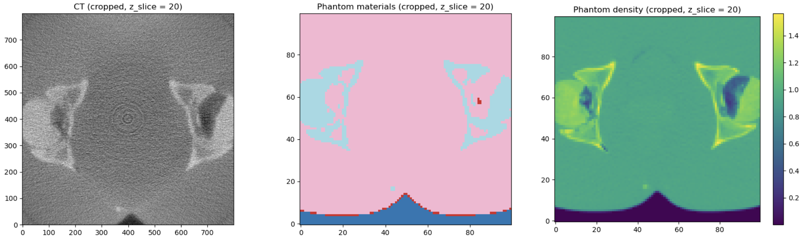
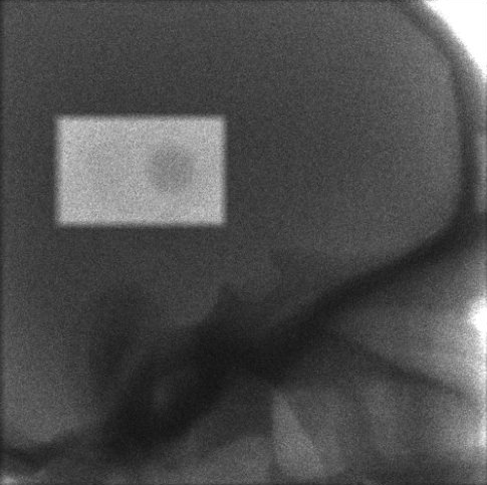
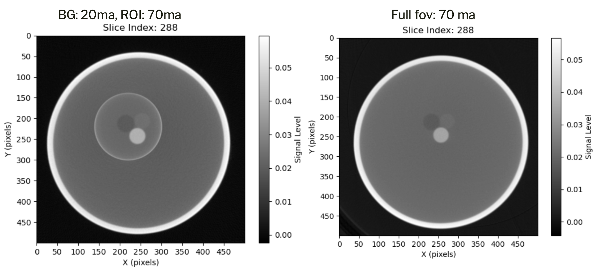
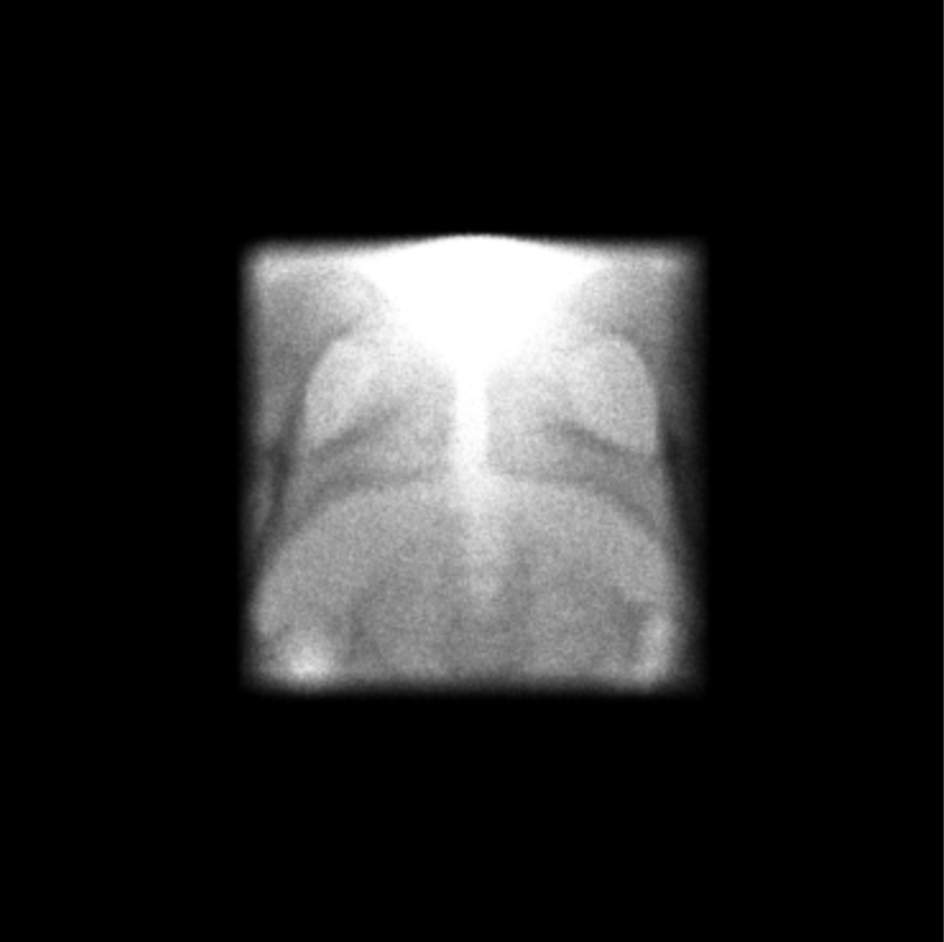
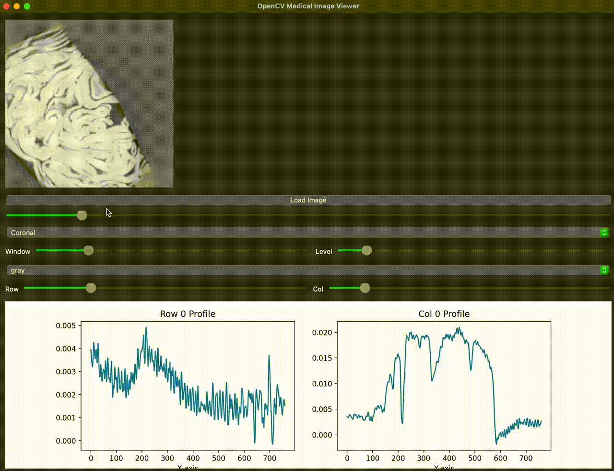
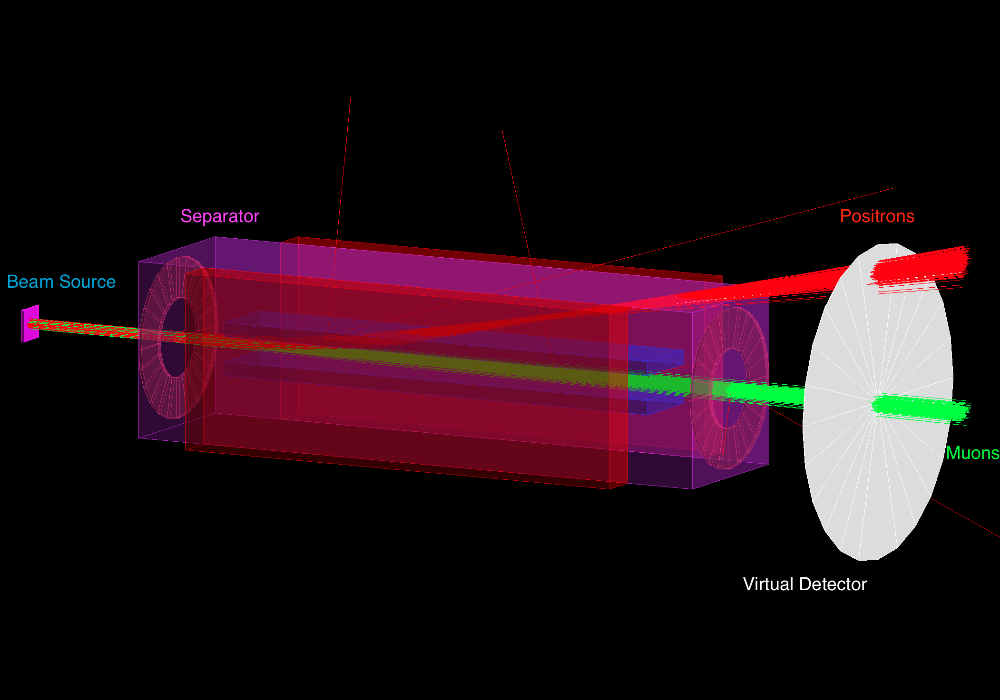
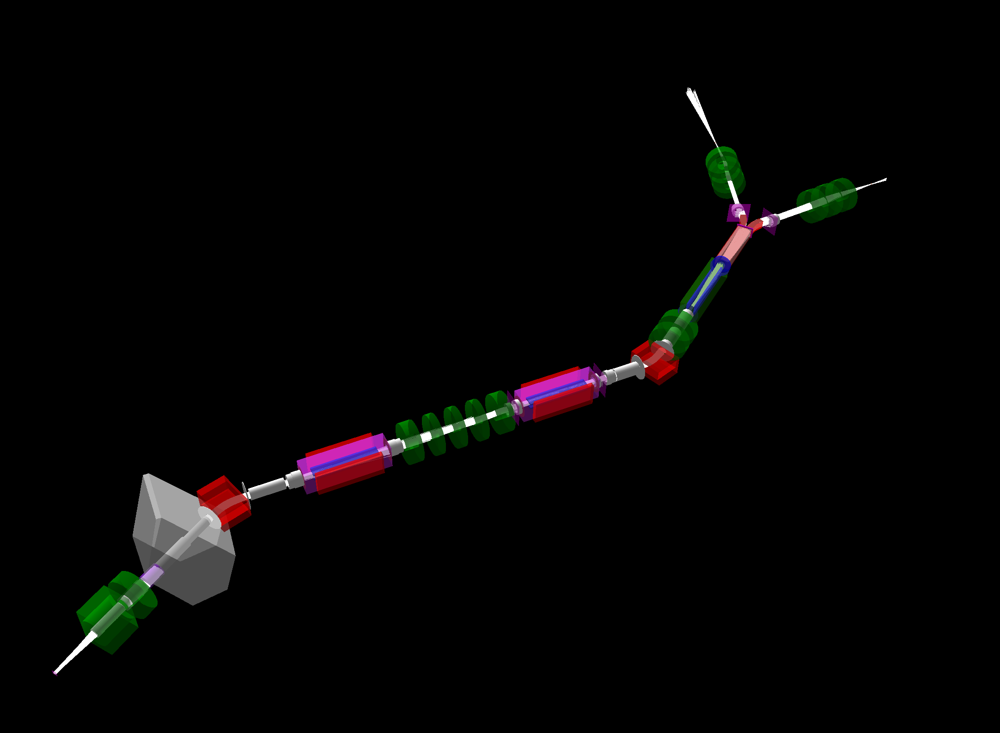
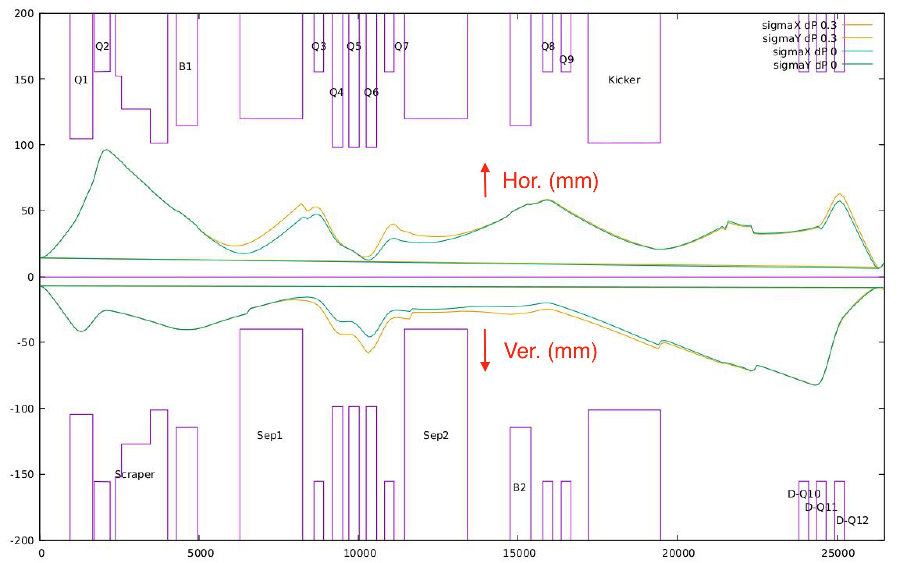
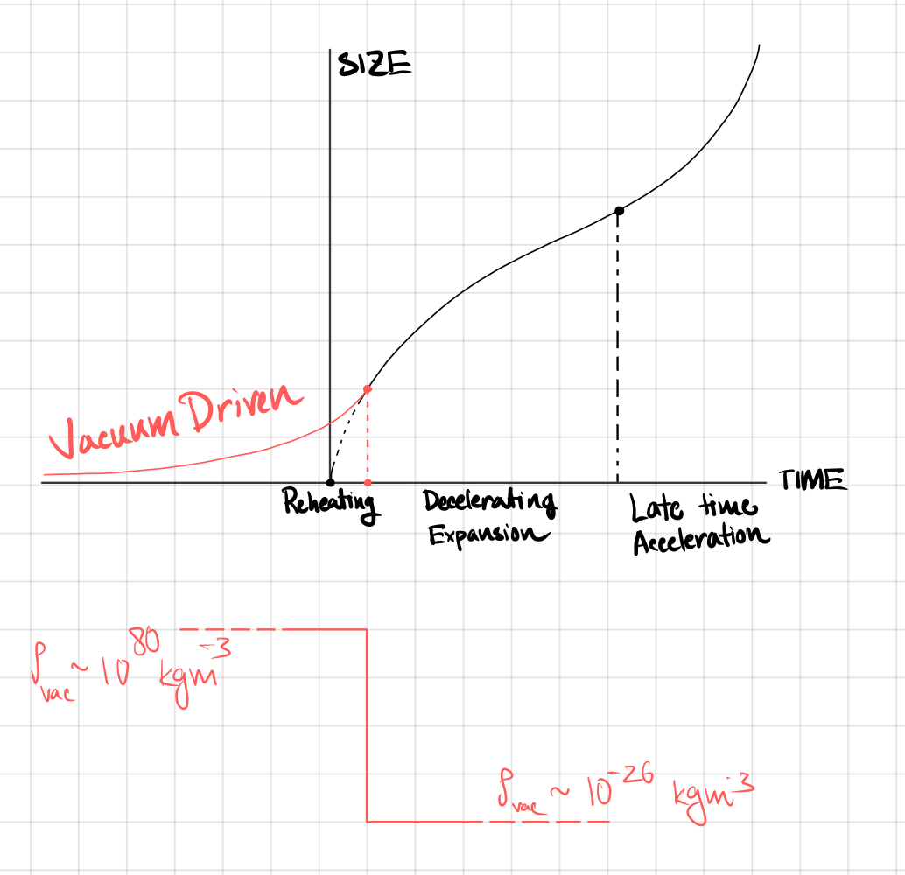
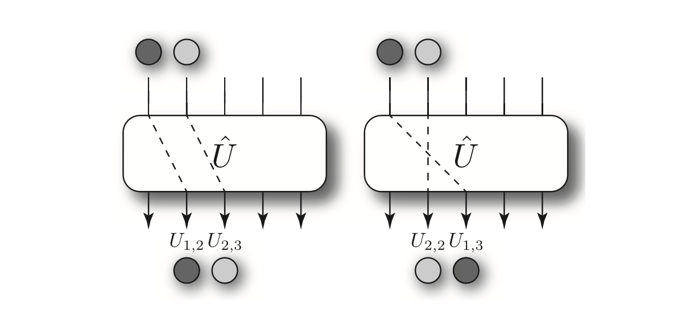

Work
This page is a log of the stuff I’ve been up to. I’ll add plots, code snippets, descriptions and photos as the projects progress.
A. CT ↔︎ MC Model Training (Continued work from Ffmcbct)
Goal: Mapping Simulated CT to Monte Carlo (MC) phantom.
- Registration: Rigid/affine (for now) steps to line up the CT volume with the MC phantom grid; handling voxel spacing and orientation.
- HU → Materials: Convert HU to density/material classes (water, bone, soft tissue, etc.), then to the properties MC codes expect (indices, densities).
- Models: start simple with UNet for segmentation/material labeling. Explore CycleGAN for domain translation (e.g., CT kernel harmonization or CT↔︎density).
- Latent Space Recon: To reconstruct with missing data in FFM mode. (this is very interesting - analytically as well as from ML application viewpoint)

References:
- Kabelac A., et al. Latent space reconstruction for missing data problems in CT.
- Tang C., et al. Unpaired LDCT Denoising Network Based on CycleGAN with Prior Image Information
B. Fluence-Field-Modulated CBCT (FFM-CBCT)
The Fluence-Field-Modulated Cone-Beam CT (FFM-CBCT) project at UHN – Princess Margaret Cancer Centre explores how dynamically shaping X-ray fluence in space and time can reduce unnecessary dose while maintaining, or even improving, image quality in regions that matter most.
Our early phase focused on building the entire workflow — from GPU-based simulation to benchtop validation — and characterizing the physics that drive it.

Methods:
- GPUMCI Simulation: implemented FFM exposure control inside a GPU-accelerated Monte Carlo engine, enabling high-fidelity projections for arbitrary collimator patterns.
- Benchtop demonstration: replicated those fluence patterns on the hardware system, proving controllable ROI-specific illumination in practice.
- Fluence compensation: designed and tested correction routines to normalize projection intensity before reconstruction, mitigating the sharp transitions that modulation introduces.
- Scatter modeling and correction: used simulation-based estimates and polynomial-surface fitting to recover the background field, accounting for both scattered and off-focal radiation.
- Analysis and visualization: built lightweight tools for projection viewing, normalization checks, and fluence-versus-dose comparison.
These experiments established a fully functional FFM-CBCT pipeline capable of toggling between simulation and physical imaging — a platform for controlled dose-reduction and physics-driven image correction.

Scatter Correction
When the rectangular collimator limits the X-ray beam to a defined ROI, the “dark” detector region still records signal — largely from scatter and off-focal radiation.
Instead of discarding this information, we used it to estimate scatter distributions and study the contribution of off-focal radiation as a secondary imaging channel.
This helped characterize how residual signal in non-illuminated regions encodes useful background information and how that can be leveraged for more accurate corrections.

Results
Reconstruction experiments were performed using both our GPU-based Monte Carlo (MC) simulations and the benchtop FFM-CBCT prototype, showing clear improvements in image quality (IQ) while lowering exposure.
- Image quality gains: In test-phantom studies, the signal-to-noise ratio (SNR) improved by 75–150 % and the contrast-to-noise ratio (CNR) by 45–95 % within the region of interest (ROI).
- Dose efficiency: MC simulations indicated that comparable image quality could be maintained in the ROI while reducing the total patient-equivalent dose by more than 50 %.

- Component separation: Simulations demonstrated separation of primary, scatter, and off-focal radiation (OFR) components, enabling targeted scatter estimation and correction.
- Artifact and noise suppression: Physical reconstructions showed artifact reduction, noise suppression, and contrast enhancement when compared to standard CBCT.
- ROI-specific imaging: Selective fluence exposure allowed targeted imaging with minimal full-field burden, supporting the feasibility of task-based dose allocation.
A representative summary from our benchtop results is shown below.
| ROI | % Δ SNR (FFM – CBCT) | % Δ CNR (FFM – CBCT) |
|---|---|---|
| 1 | 19.34 | 25.09 |
| 2 | 8.14 | 3.44 |
| 3 | 2.55 | 11.44 |
| 4 | 17.41 | N/A |
Overall, the simplified setup and physical constraints of the FFM-CBCT design reduced dose while improving image contrast and noise performance.
Scatter and OFR signals from behind the shutter—normally discarded—were found to contain recoverable information that could be exploited by future DL techniques to further enhance IQ.
And, because I just wanted to check there’s no worms inside the cabbage me and my landlord picked from his garden — I ran an FFMCBCT of it. You’ll find it somewhere above.
And here’s the poster we’ve presented at AAPM 2025 in DC.

References:
- Bartolac S., et al. Fluence field optimization for noise and dose objectives in CT.
- Bootsma G., et al. Efficient scatter distribution estimation and correction in CBCT using concurrent MC fitting.
- Adler. J., et al. “GPUMCI, a flexible platform for X-ray imaging on the GPU. 2017.
C. Muon Spectroscopy & Beamline Simulation (TRIUMF)
- Stack: Geant4 / G4Beamline for the beamline in-silica model; OPERA3D for EM field models for the optic components.
- Tuning: Parameter sweeps + GMinuit optimization for optics and transport.
- Result: Configured virtual model of M20 for surface-muon transport and spectroscopy; a digital twin for the real-life beamline.
- Deliverable:
- Stable focal spot at the experimental target with constraints on acceptance and momentum spread.
- Optimized for future Kicker installation. A hyperfast kicker is required to direct beam delivery towards either of two legs.
- Choosable polarization.
- Mimics current configuration and allows for future changes to real-life beamline without costly beamtimes.



D. Essay Projects
These are something I’ve worked on during undergrad either solo or with other students. (others to be added …)
- Higgs–R² Cosmology: a tour through inflation with higher-order curvature and how it plays with observations.

- Boson Sampling: notes on complexity, photonic implementations, and why it’s hard to fake.

E. Dynamic Systems
- Descriptions to be added …
- Descriptions to be added …
- Descriptions to be added …